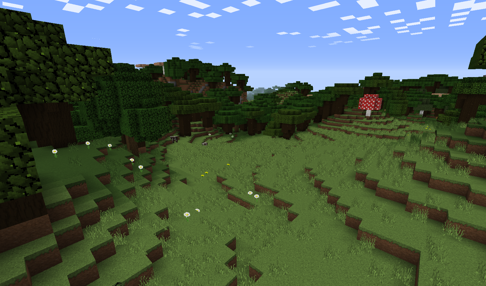
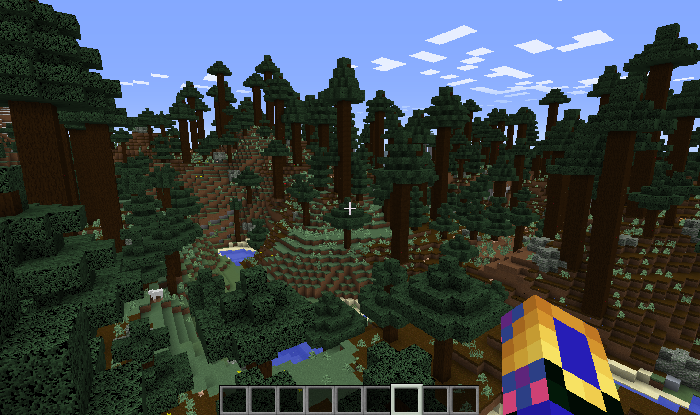
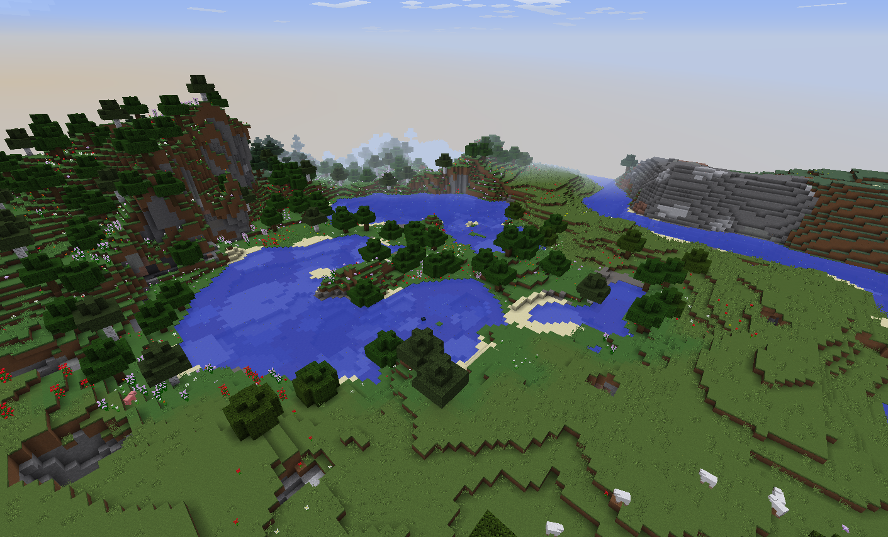
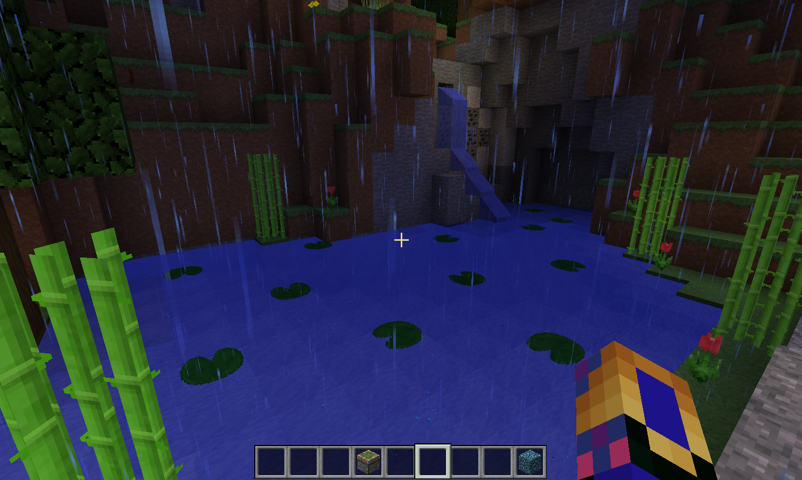
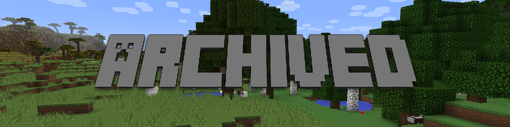

Prismic Edge

Update 1.1.6.1
Posted on November 10, 2016 by JMCNation
The one for Legendary Loot
Change Log:
-Updated the language of ads so they give more information.
-Added mutiple command consoles/Gave everyone ad controls.
-Added Legendary loot crates
-Added Legendary loot crate building with other loot crates.
-Reworked inventory of Sliverglass the Master Brewer to reflect her role better.
-Reworked price of tier 1 loot crate. Now 2000 (was 1850).
-Removed change log books from spawn. They can now be found online under change log.
JMCNation
--------------------------------------------------------------------------------------------------------------------------------------------------------
Update 1.1.6
Posted on October 21, 2016 by JMCNation
The one for Night Fall Spawn Updates
Change Log:
-Added Witch Shop at spawn that offers brewing trades to players.
-Updated Spawn to have a fall theme along with Halloween additions.
-Added EmeraldCoins into game as a new currency used to buy items from spawn. They are not a physical item you can hold.
-Added Loot crates into the game. They are chests that can be bought with EmeraldCoins and give players different tiers of loot.
-Reworked ads for server so that players have a lot more interaction with ads. Added a command console for players to disable or enable ads.
-Cleaned up old ad setup.
JMCNation
--------------------------------------------------------------------------------------------------------------------------------------------------------
Update 1.1.5.2
Posted on July 22, 2016 by JMCNation
The one for Server Improvements
Change Log:
-Many lag reducing improvements done for a better player experience
-Updated Silenda of the Past to 1.1.5.2 and brought her back online
-Silenda of the Past inventory now scales more effectively
-[Edit]Updated New Minecraft Feature room to Minecraft 1.10
-Minor Bug Fixes
JMCNation
--------------------------------------------------------------------------------------------------------------------------------------------------------
Update 1.1.5.1
Posted on July 19, 2016 by JMCNation
The one for Minecraft 1.10.x
Change Log:
-Server now compatible for Minecraft players using 1.10.x.
Change Logs for 1.10.x Here:
JMCNation
--------------------------------------------------------------------------------------------------------------------------------------------------------
Update 1.1.5
Archived on Unknown by JMCNation
The one for The Death Counter
Change Log:
-Added death counter that can be viewed in tab menu.
-Removed Silenda of the Past timer because of inaccuracy.
-Added Arcon Mine enterance.
JMCNation
--------------------------------------------------------------------------------------------------------------------------------------------------------
Update 1.1.4
Archived on Unknown by JMCNation
The one for Silenda Rating System
Change Log:
-Added Silenda of the Past rating system for her trades. Rating go from C- to SSS.
-Added countdown timer to show when Silenda leaves.
-Added Arcon Mine to game.
JMCNation
--------------------------------------------------------------------------------------------------------------------------------------------------------
Update 1.1.3
Archived on Unknown by JMCNation
The one for Minecraft 1.9.4
Change Log:
-Updated server to Minecraft 1.9.4
-Many server performance fixes.
-Bug fixes for 1.9.2 and 1.9.3.
JMCNation
--------------------------------------------------------------------------------------------------------------------------------------------------------
Update 1.1.2
Archived on Unknown by JMCNation
The one for Silenda of the Past
Change Log:
-Added Silenda of the Past. She is a foreign trader with random trades each weekend.
-Added (Mystery text) into the game. ([Edit]This was the original addition of the witch shop however it was not used until 1.1.6)
-Added new player to roster. Player name is BlazeinDiamond1.
JMCNation
--------------------------------------------------------------------------------------------------------------------------------------------------------
Update 1.1.1
Archived on Unknown by JMCNation
The one for Improved Server Hub
Change Log:
-Added forge to armory.
-Updated server hub to be bigger and support portals.
-Changed "Resource Smith" name to Armory.
-Removed old server hub
JMCNation
--------------------------------------------------------------------------------------------------------------------------------------------------------
Update 1.1
Archived on Unknown by JMCNation
The one for Fixing The Ads
Change Log:
-Made server ads less spam like by 65%.
-Server ads no longer bolded.
-Simplifed ads and made them cleaner.
-Added anti-creative and anti-spectator features.
-Added server maintenience alarm.
-Disabled old ads set up.
-Added "New Minecraft Feature" room which allows player to see what is new in an update.
-Added more secrets to spawn.
JMCNation
--------------------------------------------------------------------------------------------------------------------------------------------------------
Update 1.0